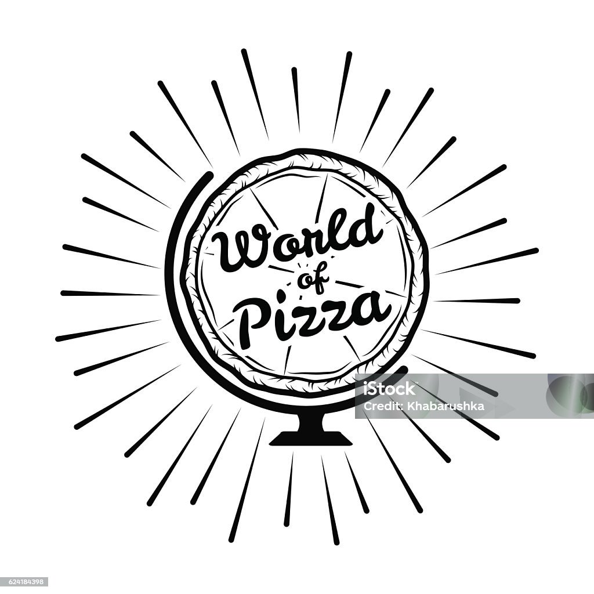

Откройте тайны древнейшего блюда планеты.
Первые упоминания о блюде появились ещё в античные времена. Древние греки готовили лепёшки с сыром и травами, похожие на современную пиццу. Итальянские моряки переняли этот способ приготовления пищи во время путешествий, постепенно совершенствуя рецептуру и делая её популярной сначала среди местных жителей Неаполя, а позже — всего мира.
Сегодня существует огромное количество видов пиццы, каждый из которых имеет свою уникальную историю происхождения и особенности приготовления:
Ингредиенты: мука, вода, дрожжи, соль, оливковое масло, сыр моцарелла, помидоры, базилик.
Способ приготовления:
1. Замесите тесто и дайте ему подойти примерно 1–1,5 часа.
2. Раскатайте тесто тонким слоем и выложите сверху тонко нарезанные помидоры, натёртый сыр моцареллу и немного базилика.
3. Выпекайте в предварительно разогретой духовке при температуре 200°C в течение 15–17 минут до золотистой корочки.
Ингредиенты: мука, вода, сыры (моцарелла, пармезан, горгонзола, эмменталь), томатный соус, орегано.
Способ приготовления:
1. Сделайте основу теста, раскатав его толщиной примерно 5 мм.
2. Равномерно распределите томатный соус, посыпьте тертыми сортами сыра.
3. Запекайте в заранее нагретой духовке при температуре 220°С около 15–20 минут до появления аппетитной румяности.
Ингредиенты: мука, вода, колбаска пепперони, моцарелла, помидорный соус, специи.
Способ приготовления:
1. Из муки, воды и дрожжей замесите мягкое эластичное тесто.
2. Тонким слоем разложите подготовленное тесто на противне, смажьте томатным соусом.
3. Посыпьте тертым сыром моцареллой и кусочками пепперони.
4. Поставьте в горячую духовку (примерно 200°C) и выпекайте 15–20 минут до готовности.
Моя любимая еда детства
Настоящая вкуснятина!
Лучшая пицца в городе!
Обожаю экспериментировать с разными начинками!